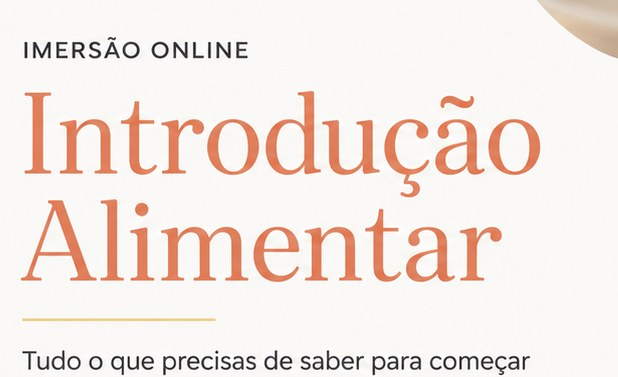

A Playfair Display foi reprovada. Aqui estão quatro substitutas, cada uma renderizada
dentro do hero verdadeiro — mesmo fundo, mesmo badge IMERSÃO em cima, mesmo H1 em
Plus Jakarta Sans 800 por baixo, mesma sub e mesmo botão. O que muda de bloco para bloco
é só a fonte do kicker.
A copy não muda em nenhuma delas, a cor coral mantém-se e o kicker continua menor que
o H1 — isso já tinha sido aprovado na ronda 2.
Não escolhi por si. Diga só a letra (A, B, C ou D) e eu aplico nas
duas páginas. Se preferir ver duas delas lado a lado antes de decidir, também faço.
Antes de escolher: qual é a fonte real da identidade visual
A Playfair tinha sido escolhida por espelhar o lockup da cliente, mas era um
palpite. Desta vez medi. Recortei a palavra Introdução do ficheiro de identidade
visual e comparei contra 26 serifs do Google Fonts, todas normalizadas à mesma altura de
maiúscula. Três métricas: rácio altura-de-x sobre maiúscula, largura da palavra e contraste
do traço.

Recorte real da identidade visual da imersão
Fonte
x / maiús.
largura
contraste
distância
Lockup real da cliente
0,710
4,82
1,70
—
Gilda Display
0,700
4,86
1,69
0,024
Frank Ruhl Libre
0,720
5,33
1,71
0,120
Prata
0,702
5,07
1,55
0,127
DM Serif Display
0,713
5,16
1,52
0,147
Playfair Display (a que lá está hoje)
0,703
5,06
1,44
0,166
Cormorant Garamond
0,620
4,28
2,74
0,667
A Gilda Display ganha com
folga: distância 0,024 contra 0,120 da segunda. É a fonte da identidade da cliente, ou a
sua gémea mais próxima no Google Fonts. Por isso é a opção A.
Como está hoje — reprovada
Playfair Display 500
Serif de alto contraste (família Didone).
Ao lado da Plus Jakarta 800, que tem peso uniforme, o hero lê-se como duas páginas
coladas.
Imersão
Introdução Alimentar
Imersão gravada•Acesso imediato
Tudo o que precisas de saber para começar
Descobre como começar a introdução alimentar do teu bebé com segurança, com base em informação atualizada.
Quero ter acesso
As quatro opções
Opção A
Gilda Display
A fonte da própria identidade visual da cliente
1 família nova (entra no lugar da Playfair, não acumula)
Imersão
Introdução Alimentar
Imersão gravada•Acesso imediato
Tudo o que precisas de saber para começar
Descobre como começar a introdução alimentar do teu bebé com segurança, com base em informação atualizada.
Quero ter acesso
Foi a vencedora da medição: rácio altura-de-x sobre maiúscula 0,700 contra 0,710 do lockup real, largura 4,86 contra 4,82 e contraste 1,69 contra 1,70. Distância 0,024, cinco vezes melhor que a segunda. É uma serif de contraste médio e traço leve: não briga com a Plus Jakarta porque não tem o salto grosso/fino da Playfair.
Opção B
Fraunces
Serif humanista de baixo contraste (soft serif)
1 família nova
Imersão
Introdução Alimentar
Imersão gravada•Acesso imediato
Tudo o que precisas de saber para começar
Descobre como começar a introdução alimentar do teu bebé com segurança, com base em informação atualizada.
Quero ter acesso
Traço quase uniforme e serifas arredondadas. É a mais próxima do peso visual da Plus Jakarta 800, por isso o hero lê-se como um bloco só. Perde a elegância do lockup original, ganha coesão com o resto da página.
Opção C
Newsreader
Serif editorial de baixo contraste, terminais em gota
1 família nova
Imersão
Introdução Alimentar
Imersão gravada•Acesso imediato
Tudo o que precisas de saber para começar
Descobre como começar a introdução alimentar do teu bebé com segurança, com base em informação atualizada.
Quero ter acesso
Registo de revista. Mantém a ideia de serif do lockup mas com hastes finas menos extremas que a Playfair. É o termo médio entre a A e a B.
Opção D
Plus Jakarta Sans em maiúsculas espaçadas
Sem serifa nenhuma; a fonte que a página já carrega
Zero famílias novas — a página fica mais leve do que está hoje
Imersão
Introdução Alimentar
Imersão gravada•Acesso imediato
Tudo o que precisas de saber para começar
Descobre como começar a introdução alimentar do teu bebé com segurança, com base em informação atualizada.
Quero ter acesso
Elimina de vez o choque de dois registos: o hero passa a ter uma só voz tipográfica. Em troca, o kicker deixa de ser o elemento romântico do bloco e passa a ser um rótulo, o que muda o tom do topo da página. É a opção mais segura e a menos expressiva.
O que fica igual em qualquer uma das quatro
Zero alteração de copy. As palavras Introdução Alimentar são as mesmas.
Cor coral #B96136, a que já estava aprovada.
O kicker continua menor que o H1 e por baixo do badge IMERSÃO.
No máximo uma família nova no carregamento — a nova entra no lugar da Playfair,
não por cima. Na opção D não entra nenhuma e a página fica mais leve.
Aplica-se às duas páginas (/ e /ao-vivo.html), que partilham o mesmo
hero.